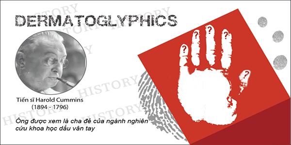

Lịch sử nghiên cứu khoa học vân tay
18:00, 20/7/2016
Khoa học về dấu vân tay được Francis Galton khởi xướng vào cuối thế kỉ thứ XIX. Từ đó đến nay nó được phát triển mạnh mẽ nhờ một đội ngũ hùng hậu các nhà di truyền học và sinh vật học. Năm 1880, Henry Faulds đưa ra lý luận về số lượng vân tay RC (Ridge Count) để đánh giá mức độ phụ thuộc của vân tay vào gen di truyền.
LỊCH SỬ NGHIÊN CỨU KHOA HỌC VÂN TAY
Các nhà bác học cho rằng dấu vân tay được hình thành dưới tác động của hệ thống gen di truyền mà thai nhi được thừa hưởng và tác động của môi trường thông qua hệ thống mạch máu và hệ thống thần kinh nằm giữa hạ bì và biểu bì. Một vài trong số các tác động đó là sự cung cấp ôxy, sự hình thành các dây thần kinh, sự phân bố các tuyến mồ hôi, sự phát triển của các biểu mô… Điều thú vị là mặc dù có chung một hệ thống gen di truyền nhưng vân tay ở mười đầu ngón tay của mỗi cá nhân khác nhau. Năm 1868 nhà bác học Roberts chỉ ra rằng mỗi ngón tay có một môi trường phát triển vi mô khác nhau; ngoài ra ngón tay cái và ngón tay trỏ còn phải chịu thêm một vài tác động môi trường riêng. Vì vậy, vân tay trên mười đầu ngón tay của một cá nhân khác nhau. Hai anh em (chị em) song sinh cùng trứng có dấu vân tay khá là giống nhau nhưng vẫn có thể phân biệt được rõ dấu vân tay của từng người. Đó là vì tuy có cùng hệ thống gen di truyền và chia sẻ chung môi trường phát triển trong bụng mẹ nhưng do họ có vị trí khác nhau trong dạ con nên môi trường vi mô của họ khác nhau và do đó có dấu vân tay khác nhau.
Năm 1968 nhà bác học Holt đã chứng minh được rằng có thể dự đoán tương đối chính xác tổng số lượng vân tay TRC (Total Ridge Count) và mức độ phụ thuộc của chúng vào gen di truyền của mỗi người. Vì vậy có thể coi TRC là một biểu hiện phụ trợ của hệ thống gen mà con người được thừa kế. TRC phản ánh gần đúng sự đóng góp của từng gen riêng biệt trong hệ thống gen vào việc hình thành một con người cụ thể. Thật vậy, dấu vân tay được hình thành dưới tác động của hai yếu tố hệ thống gen và môi trường nên nó phản ánh được quá trình hình thành và phát triển của thai nhi.
Dấu vân tay được sử dụng rộng rãi để nhận dạng cá nhân, để hội chẩn những chứng bệnh do di truyền và phát hiện tiềm năng của con người.
Việc sử dụng dấu vân tay và vân chân để nhận dạng đã được người Trung Quốc làm từ thế kỉ thứ XIV. Khi một đứa trẻ ra đời, người Trung Quốc đã dùng mực bôi đen chân tay nó và in dấu lên một tờ giấy.
Người Anh bắt đầu sử dụng dấu vân tay một cách tình cờ vào tháng 7 năm 1858. Ngài William Herschel, một quan cai trị người Anh tại Ấn độ, do quá bức xúc với tính gian trá đã bắt thương gia bản xứ là Rajyadhar Konai in dấu bàn tay lên mặt sau của tờ hợp đồng.
Vào nửa sau của thế kỉ XIX, Richard Edward Henry của Scotland Yard (cơ quan an ninh của Anh) đã phát triển phương pháp phân loại và nhận dạng dấu vân tay. Phương pháp này được Francis Galton cải tiến vào năm 1892 và được sử dụng làm cơ sở thực nghiệm với độ tin cậy cao. Hầu như đồng thời với hệ thống phân loại vân tay của người Anh, Juan Vucetich đã tạo ra một hệ thống phân loại khác cho các nước dùng tiếng Tây Ban Nha. Hiện nay InterPol sử dụng cả hai hệ thống phân loại nêu trên. Ở Mỹ có nhiều hệ thống phân loại và xử lý thông tin vân tay. Tuy nhiên, có thể phân loại vân tay theo ba kiểu chính: xoáy tròn, móc và vòm. Ngoài ra, mỗi kiểu còn được phân theo độ nghiêng: 0, 45, 90 và 135 độ.
Việc sử dụng dấu vân tay để nhận dạng được áp dụng rộng rãi trong đời sống của các nước công nghiệp phát triển. Dấu vân tay không những được sử dụng trong lĩnh vực hình sự mà còn được sử dụng trong việc xác nhận nhân thân của cá nhân khi truy cập mạng hoặc mở khoá. Một số ngân hàng đã bắt đầu thanh toán thẻ ATM sử dụng máy đọc vân tay.
Trong y học, dựa trên những bức tranh vân tay đặc trưng, người ta phát hiện ra những bệnh do sai lệch gen như hội chứng Down, hội chứng ba nhiễm sắc thể 18, ba nhiễm sắc thể 13, sai lệch nhiễm sắc thể giới tính XXX, XXY…
Trong các xã hội công nghiệp hiện đại, ngành vân tay học còn trợ giúp bố mẹ trong việc phát triển năng khiếu và hạn chế hoặc khắc phục phần nào những khiếm khuyết của con bằng cách đọc vân tay để dự báo tiềm năng. Tuy nhiên, dấu vân tay chỉ có tính phụ trợ trong việc nhận biết những nét tính cách được kế thừa bằng con đường di truyền và chỉ phản ánh gần đúng tiềm năng của cá nhân. Việc đọc và nhận dạng tiềm năng qua dấu vân tay chỉ có thể giúp bố mẹ và con cái nhận biết khả năng còn tiềm ẩn của con cái. Nhận dạng tiềm năng không thể thay thế quá trình rèn luyện để phát triển tiềm năng thành khả năng và tài năng…
CÁC SỰ KIỆN LỊCH SỬ NGHIÊN CỨU DERMATOGLYPHICS
Các nhà khoa học đã và đang nghiên cứu về ngành khoa học vân tay :


- Trung Quốc Cổ đại: Các thương nhân sử dụng dấu ấn của ngón tay cái trong việc giao dịch.
- Năm 1684: Tiến sĩ Nehemiah Grew (1641-1712) giới thiệu Finger Prints, Palms and Soles đến Hội Hoàng gia.
- Năm 1685: Tiến sĩ Bidloo công bố tấm bản đồ giải phẫu, minh họa các chỉ số của con người có liên quan đến thái độ sống.
- Năm 1686: Tiến sĩ Marcello Malpighi (1628-1694) đưa ra luận thuyết về các loại vân tay: xoắn, móc, vòm trong dấu vân tay.
- Năm 1788: J.C.Mayer là người đầu tiên đưa ra thuyết cơ bản về phân tích vân tay và giả thuyết rằng dấu vân tay là duy nhất.
- Năm 1823: Tiến sĩ Jan Purkinje phân loại những chủng trên các vân tay thành 9 loại: arch, tented arch, ulnar loop, radial loop, peacock’s eye/compound, spiral whorl, elliptical whorl, circular whorl, và double loop/composite.
- Năm 1823: Johannes Evangelista Purkinji tìm thấy các mô hình và hình dạng của ngón tay bắt đầu hình thành ở khoảng tuần thứ 13 của thai nhi trong bụng mẹ.
- Năm 1832: Tiến sĩ Charles Bell (1774-1842) là một trong những bác sĩ đầu tiên kết hợp khoa học nghiên cứu giải phẫu thần kinh với thực hành lâm sàng. Ông đã xuất bản cuốn “The Hand: Its Mechanism and Vital Endowments as Evincing Design“.
- Năm 1893: Francis Galton (cháu của Charles Darwin) là người đầu tiên phát hiện vai trò của vân tay trong lĩnh vực di truyền và sự khác biệt vân tay ở những chủng tộc khác nhau. Ông đã đơn giản hoá việc phân loại vân tay và chia vân tay thành 3 loại lớn: Vân sóng (không có tam giác điểm), vân móc (có 1 tam giác điểm), vân xoáy (có 2 tam giác điểm) (1892) Francis Galton (cháu của Charles Darwin) là người đầu tiên phát hiện vai trò của vân tay trong lĩnh vực di truyền và sự khác biệt vân tay ở những chủng tộc khác nhau.
- Năm 1897: Harris Hawthorne Wilder là người Mỹ đầu tiên học về Dermatoglyphics. Ông đã phát minh ra chỉ số Main Line, nghiên cứu thenar hypothenar eminence, khu II, III, IV.
- Năm 1926: Tiến sĩ Harold Cummins được xem là cha đẻ của ngành nghiên cứu khoa học dấu vân tay đưa ra lý luận chỉ số cường độ vân tay PI (Pattern Intensity).Giá trị RC, số lượng tam giác điểm, hình dạng vân tay, vị trí hình dạng vân tay ở những ngón tay khác nhau có liên quan đến tiềm năng và trí tuệ của con người.Ông nghiên cứu ra rằng dấu vân tay được hình thành đồng thời với sự hoàn thiện các cấu trúc của não bộ. Dấu vân tay được khởi tạo ở thai nhi vào giai đọan từ 13 đến 19 tuần tuổi. Vào giai đọan trước đó, thai nhi không có dấu vân tay đồng thời não bộ cũng chỉ trong giai đoạn hình thành. Khi thai nhi được 19 tuần tuổi cũng là lúc các vùng chính của não hình thành bao gồm cả vỏ đại não.
- Năm 1944: Tiến sĩ tâm lý phân tích Julius Spier Chirologist xuất bản cuốn sách “Bàn tay của trẻ em”. Ông đã khám phá một sốđiểm đáng kể, đặc biệt là trong lĩnh vực phát triển tâm sinh lý, chẩn đoán sự mất cân bằng và các vấn đề trong khu vực này từ các mô hình của bàn tay.
- Năm 1957: Tiến sĩ Walker sử dụng các cấu hình da trong chẩn đoán Hội chứng Down.
- Năm 1968: Sarah Holt nghiên cứu mô hình các vân tay của cả hai bàn tay và lòng bàn tay ở các dân tộc khác nhau cả về đặc tính bẩm sinh và sự tác động của môi trường.
- Năm 1969: John J. Mulvihill, MD và David W. Smith, MD xuất bảncuốn “Thiên tài qua vân tay”, cung cấp phiên bản mới nhất về sựhình thành của vân tay.
- Năm 1970: Liên Xô sử dụng Sinh trắc vân tay trong việc lựa chọn thí sinh cho thế vận hội Olympic.
- Năm 1976: Schaumann nghiên cứu các chỉ số trên vân tay của những người bệnh tim bẩm sinh, ung thư, bệnh bạch cầu, bệnh tâm thần phân liệt… nghiên cứu được hướng vào nghiên cứu di truyền và chẩn đoán của các khuyết tật nhiễm sắc thể.
- Năm 1980: Trung Quốc thực hiện công trình nghiên cứu tiềm năng con người, trí thông minh và tài năng trong vân tay và gen của con người.
Theo: umit.vn